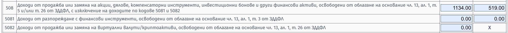
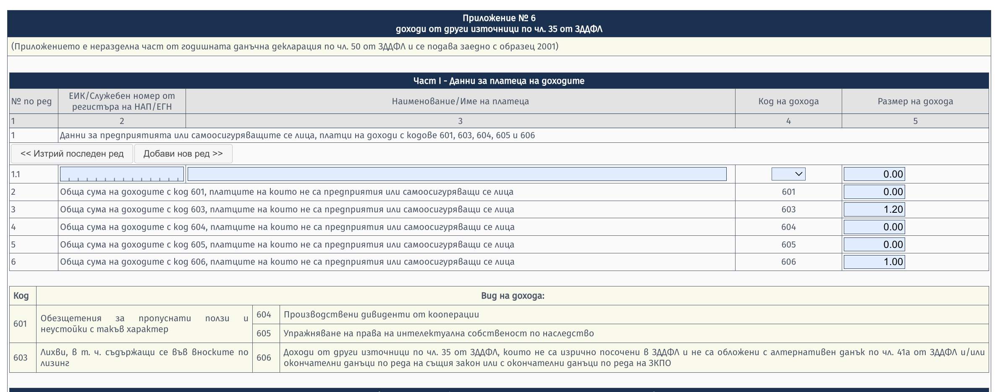
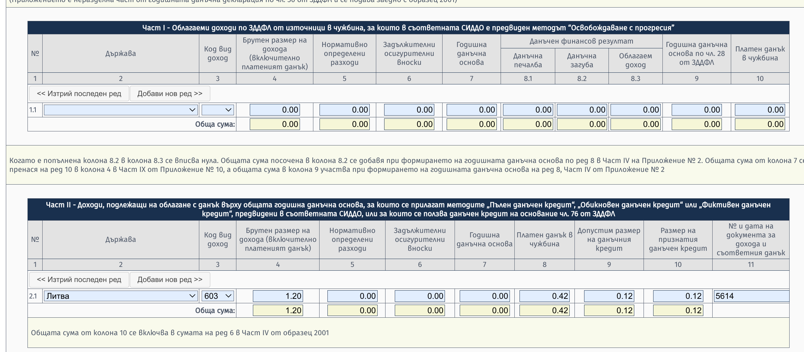
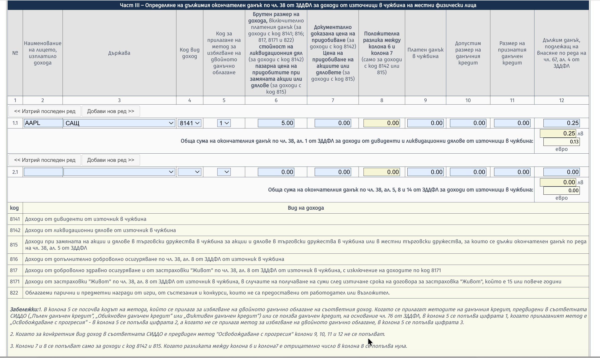
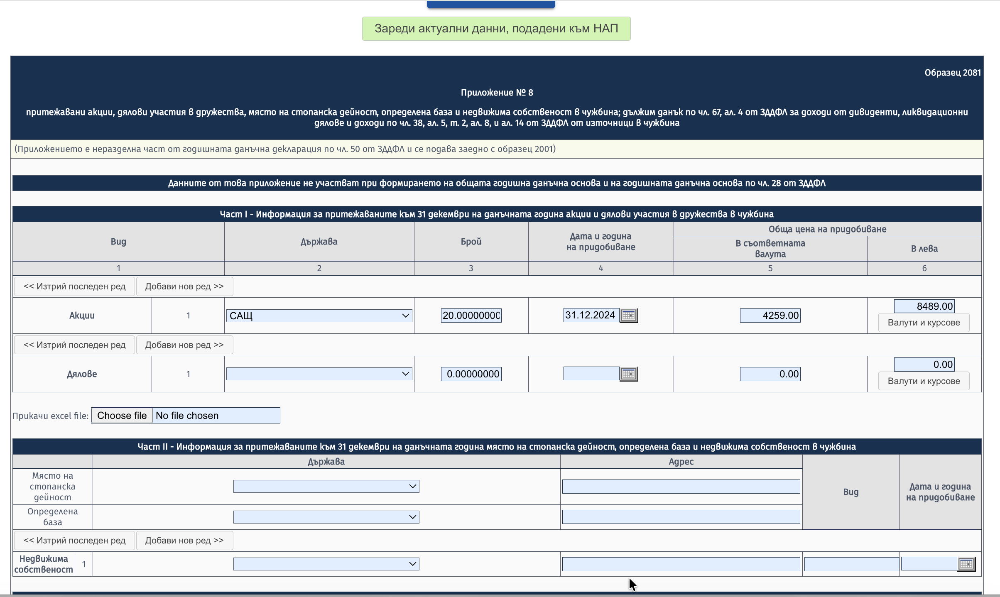

Получи ли писмо от НАП за доходите си от инвестиции?Got a Letter from the NRA About Your Investment Income?
Марина Мучакова
··11 мин четене11 min read
Кратко и по същество — какво да направиш, за да се ориентираш.
Ако си получил писмо от НАП за доходи от инвестиции, вероятно се чудиш откъде да започнеш. Няма нужда от паника — но има нужда от действие, и то бързо. По-долу съм събрала най-важното: как да намериш счетоводител, как да се справиш сам, какви документи ти трябват и къде точно се декларира всеки вид доход. Материалът се отнася за данъчна година 2025 (доходи, придобити от 01.01.2025 до 31.12.2025).
1. Първо и веднага — намери счетоводител
Търси счетоводител, който разбира от инвестиционни продукти — не всеки счетоводител работи с тях. Добро място да намериш такъв е фейсбук групата ИПСБ — там счетоводителите се събират, за да обсъждат казуси. Публикувай въпроса си директно в групата и бързо ще прецениш кой става и кой — не.
2. Нямаш бюджет за счетоводител? Справи се сам
Имам YouTube канал, в който в няколко видеа обяснявам кое къде се попълва и как се пресмята. Каналът е там от години — прегледай съдържанието му: The Crypto Academy.
Ако каналът не ти е достатъчен, имам и блог с немалко материали по темата, включително за ДДС: muchakova.com.
3. Сайтът на НАП е труден — но има помощ
Да, порталът на НАП е user hostile — не е дружелюбен. Но НАП са осигурили национален телефон: 0700 18 700. Достъп до електронната им платформа имаш с КЕП, с ПИК и по други начини. Обади се, избери от тоналното меню „електронни услуги“ и поискай връзка с оператор — ще те упътят. Съпортът наистина е окей и ще ти спести много време и нерви.
4. Ако работиш със счетоводител — отиди подготвен
Счетоводителят няма да свърши твоята работа вместо теб. За да не губите време (а то и без това е малко) в излишна кореспонденция, отиди подготвен. Ето какво го вълнува, особено когато не се познавате.
Имаш ли други доходи освен инвестиционните?
Това има пряко отношение към евентуална регистрация по ДДС. Прагът за задължителна регистрация е 51 130 евро годишен оборот (чл. 96, ал. 1 ЗДДС). Веднага след натрупването му се смяташ за задължен да се регистрираш, а всеки твой приход след датата на (предполагаемата) регистрация може да се окаже облагаем с ДДС. Търговията с финансови активи и крипто е освободена доставка, но при определени условия влиза в оборота за регистрация — затова твоят счетоводител трябва да прецени има ли щета и какъв е размерът ѝ. Ако се налагат кризисни мерки (например да направиш фирма или временно да спреш дейност, докато се изясни статусът ти), по-добре да го знаеш възможно най-рано.
Точност за 2025 срещу 2026: до 31.12.2025 г. прагът беше 100 000 лв., проследяван за 12 последователни месеца. От 01.01.2026 г. е 51 130 евро (равностойността в евро), но вече се изчислява на календарна година и се следи ежедневно (ДВ бр. 115/30.12.2025).
Осигуряваш ли се? Формираш ли „занятие“?
Ако да — къде, как, на какъв праг и от кога. Това е важно, защото ако търговията ти е прераснала в занятие (търговец по смисъла на Търговския закон), доходът ти вероятно е и осигурителен.
Обикновено си „чист“, ако не си самоосигуряващо се лице.
Ако си самоосигуряващо се лице на максималния осигурителен праг — също си окей.
Ако си под максималния праг — вероятността да доплащаш осигуровки е значителна.
Има и втори проблем със занятието. Ако си бил в майчинство/бащинство или си получавал обезщетение за безработица (обезщетения, които заместват липсващ трудов доход), а през същия период си търгувал/формирал занятие, може да се наложи да върнеш обезщетението на НОИ. Причината: имаш доход, който замества трудовия, което обезсмисля обезщетението. На администрацията не ѝ пука дали този доход е „достатъчен“ — интересува я единствено дали периодът на обезщетението съвпада с периода на занятие по месеци, седмици и дни.
Държавен служител или на трудов договор?
Ако формираш занятие, имам лоша новина: дейността ти (трейдване) може да влезе в противоречие с трудовия ти договор или служебното правоотношение. Това означава максимално бързо да смениш титуляра с майка си, баща си, съпруг(а) или друг пълнолетен близък. Междувременно извади практиката на ЕС относно управлението на лично портфолио (което според Съда на ЕС е лично имущество) и питай писмено юридическия отдел дали нарушаваш правилата с личните си инвестиции. Отговорът им няма да те спаси от данъци, но може да те спаси от дисциплинарно наказание или уволнение.
Документите, без които никой не може да ти помогне
Печалбите и загубите се изчисляват от справката „Trades Confirmation Report“ (или неин еквивалент). В декларацията се посочват цени на придобиване и цени на продажба.
Общ случай (чл. 33 ЗДДФЛ): цена на продажба − цена на придобиване − 10% нормативно признати разходи = облагаема печалба. Данък 10% (ефективна ставка 9%).
При занятие: всички продажби − всички покупки − всички допустими и реално направени разходи (вкл. евентуално дължимите осигуровки) = облагаема печалба. Данък 15%.
Когато твърдиш, че си продавал на регулиран пазар или сегмент в ЕС и печалбата ти е необлагаема — трябва да го докажеш. Никой не го приема на доверие. Доказва се пак от Trades Confirmation — там обикновено са описани борсите, през които реално са минали сделките. Без тази справка забрави да намериш счетоводител, който да ти помогне.
Внимание за CFD: освобождаването по чл. 13, ал. 1, т. 3 ЗДДФЛ важи само за сделки на регулиран пазар. CFD-тата (Trading 212, eToro, Plus500 и подобни) са извънборсови договори с брокера — дори базовият актив да е акция от ЕС, печалбата от CFD е облагаема.
Допустимите формати, с които счетоводителите обработват информацията машинно, са xls, xlsx, csv, docx и PDF, направен така, че да допуска OCR разчитане. PNG и снимки от телефон не стават — никой не е длъжен да разчита скрийншоти. Ако не можеш да извадиш справка от брокера, пиши на съпорта или използвай изкуствен интелект.
5. Периодът и двата типа „прецакани“ инвеститори
Периодът, за който трябва да подготвиш документи, е 01.01.2025 – 31.12.2025. Има два вида инвеститори в проблем:
Такива, които са подали годишна декларация, но са скрили трейдинга.
Такива, които нищо не са подавали.
Счетоводителят ти трябва да е наясно от кои си, защото сроковете и последиците са различни:
Първи тип: краен срок за еднократна корекция — 30 септември (чл. 53, ал. 2 ЗДДФЛ). Неподаването на корекция в срок означава глоба.
Втори тип: подаването може да се забави и след септември, но глобата вероятно е гарантирана — за което счетоводителят няма отговорност.
6. Кое къде се декларира
6.1. Търговия с финансови инструменти (облагаема) — Приложение 5, код 508
Търговията с финансови инструменти се обобщава на един ред, който включва: цена на продажба, цена на придобиване, печалба и загуба. Загубата от текущата година се приспада от печалбата за текущата година при финансови инструменти, валутна търговия и крипто. (Ако например си продал автомобил на загуба — там приспадане няма.) Важно: загубите от финансови инструменти не се пренасят за следващи години — компенсират само в рамките на същата календарна година.
Място: Приложение 5, код 508. ДЦК са с код 508; крипто — код 5082; наследствено крипто или обезщетения от фалирали борси — също код 5082.
6.2. Регулиран пазар в ЕС (необлагаема печалба) — Приложение 13, код 5081
Когато пазарът е регулиран в ЕС, печалбата е необлагаема (чл. 13, ал. 1, т. 3 ЗДДФЛ) и се попълват само цена на придобиване и цена на продажба. Място: Приложение 13, код 5081.

Картинка 2 — Приложение 13 (освободени доходи, код 5081)
6.3. Лихви — Приложение 6, код 603 (бонуси и yield — код 606)
Лихвите се описват в Приложение 6, код 603. Всякакви бонуси и yield са на същото място, но с код 606.
Не попълвай ред 1.1! На него стоят единствено български платци. IBKR, eToro, Trading 212 и подобни не са от България.

Картинка 3 — Приложение 6 (лихви код 603, други доходи код 606)
6.4. Удържан данък при източника върху лихвите — Приложение 9
Ако върху платената лихва има удържан данък при източника (което е силно вероятно), трябва да попълниш и Приложение 9, със същия код (603).
Част I или Част II? Зависи от метода в СИДДО с конкретната държава (обикновено Ирландия или Кипър) — „освобождаване с прогресия“ или данъчен кредит. Провери метода в таблицата за премахване на двойното данъчно облагане на сайта на НАП (nra.bg, раздел СИДДО), свали таблицата и попълни съответната част.

Картинка 4 — Приложение 9 (методи за избягване на двойното данъчно облагане)
6.5. Дивиденти — Приложение 8, код 8141
Дивидентите се описват в Приложение 8 (Образец 2081), код 8141. Ставката на окончателния данък е 5% (чл. 38, ал. 1, т. 2 във вр. с чл. 46, ал. 3 ЗДДФЛ). В общия случай:
Акция с удържан данък върху дивидента → в колона 5 попълваш код 1; тогава няма данък за внасяне в България.
Акция без удържан данък → в колона 5 попълваш код 3 и внасяш 5% данък в България.

Картинка 5 — Приложение 8, Част III (окончателен данък по чл. 38, дивиденти)
6.6. Налични акции, дялове и имоти в чужбина към 31.12 — Приложение 8
Наличните към 31.12 акции и дялове се попълват в Приложение 8, Част I. Наличните недвижими имоти в чужбина — в същото приложение, Част II.
Никакви други налични активи не подлежат на деклариране — нито физическо злато, нито физическо сребро, нито крипто, нито диаманти. Нищо.

Картинка 6 — Приложение 8, Част I и Част II (налични акции/дялове и имоти)
6.7. Декларираме ли ETF-ите?
Да — когато участваш като акционер.
Не — когато имаш друга форма на инвестиционно участие.
Имай предвид: дял от дружество ≠ дял от фонд.
6.8. Дата на придобиване
Аз посочвам 31.12. на годината, за която декларирам, вместо да засичам трейд по трейд. На НАП им е важно какво притежаваш, а тази част не касае данъчното облагане — затова декларирането „на едро“ е допустимо на практика. Технически перфектно ли е? Не. Създава ли проблеми? Също не. Затова си спестявам усилието, времето и нервите.
Надявам се това да ти помогне да се ориентираш. При нужда — виж YouTube канала и блога, а ако въпросът е сложен, потърси счетоводител, който наистина разбира от инвестиции.
С уважение, Марина Мучакова
Материалът е с информативен характер и към 18 септември 2026 г. отразява действащата уредба (ЗДДФЛ, ЗДДС). Той не замества индивидуална данъчна консултация по конкретния ти случай.
Short and to the point — what to do to get your bearings.
If you've received a letter from the NRA (the Bulgarian National Revenue Agency) about investment income, you're probably wondering where to start. No need to panic — but you do need to act, and quickly. Below I've gathered the essentials: how to find an accountant, how to handle it yourself, what documents you'll need, and exactly where each type of income is declared. This material applies to tax year 2025 (income earned from 01.01.2025 to 31.12.2025).
1. First and immediately — find an accountant
Look for an accountant who understands investment products — not every accountant works with them. A good place to find one is the Facebook group ИПСБ (the Bulgarian accountants' community) — that's where accountants gather to discuss cases. Post your question directly in the group and you'll quickly get a feel for who's up to it and who isn't.
2. No budget for an accountant? Do it yourself
I have a YouTube channel where, across several videos, I explain what goes where and how it's calculated. The channel has been there for years — go through its content: The Crypto Academy.
If the channel isn't enough, I also have a blog with plenty of material on the topic, including on VAT: muchakova.com.
3. The NRA website is hard — but there's help
Yes, the NRA portal is user hostile — it's not friendly. But the NRA runs a national phone line: 0700 18 700. You can access their electronic platform with a qualified electronic signature (КЕП), with a PIN (ПИК), and by other means. Call, choose “electronic services” from the touch-tone menu and ask to be connected to an operator — they'll guide you. The support really is fine and will save you a lot of time and nerves.
4. If you work with an accountant — show up prepared
The accountant will not do your work for you. To avoid wasting time (of which there's little anyway) on needless back-and-forth, show up prepared. Here's what they care about, especially when you don't yet know each other.
Do you have income other than the investment income?
This is directly relevant to a possible VAT registration. The threshold for mandatory registration is EUR 51,130 in annual turnover (Art. 96(1) VAT Act). As soon as you cross it you're considered obliged to register, and any revenue you earn after the date of the (presumed) registration may turn out to be subject to VAT. Trading in financial assets and crypto is an exempt supply, but under certain conditions it counts toward the registration turnover — which is why your accountant needs to assess whether there's damage and how large it is. If crisis measures are called for (for example, setting up a company or temporarily halting activity until your status is clarified), you'd better know as early as possible.
Accuracy for 2025 vs. 2026: until 31.12.2025 the threshold was BGN 100,000, tracked over 12 consecutive months. From 01.01.2026 it is EUR 51,130 (the euro equivalent), but it is now calculated per calendar year and monitored daily (State Gazette issue 115/30.12.2025).
Do you pay social security? Are you forming a “trade/occupation”?
If so — where, how, at what threshold and since when. This matters, because if your trading has grown into a trade or occupation (a merchant within the meaning of the Commerce Act), your income is probably also subject to social-security contributions.
Usually you're “clean” if you're not a self-insured person.
If you're a self-insured person at the maximum insurable-income ceiling — you're also fine.
If you're below the maximum ceiling — the likelihood of owing additional contributions is significant.
There's a second problem with forming an occupation. If you were on maternity/paternity leave or received unemployment benefit (benefits that replace missing employment income), and during the same period you were trading / forming an occupation, you may have to return the benefit to the NSSI (НОИ). The reason: you have income that replaces employment income, which defeats the purpose of the benefit. The administration doesn't care whether that income is “enough” — all it cares about is whether the benefit period overlaps with the occupation period, by months, weeks and days.
A civil servant or on an employment contract?
If you're forming an occupation, I have bad news: your activity (trading) may conflict with your employment contract or your civil-service relationship. That means changing the account holder as fast as possible to your mother, father, spouse or another adult relative. In the meantime, pull the EU case law on managing a personal portfolio (which, according to the Court of Justice of the EU, is personal property) and ask the legal department in writing whether your personal investments breach the rules. Their answer won't save you from taxes, but it may save you from a disciplinary penalty or dismissal.
The documents without which no one can help you
Gains and losses are calculated from the “Trades Confirmation Report” (or its equivalent). The return states acquisition prices and sale prices.
General case (Art. 33 PITA): sale price − acquisition price − 10% statutory recognized expenses = taxable gain. Tax 10% (effective rate 9%).
With an occupation: all sales − all purchases − all allowable and actually incurred expenses (including any contributions due) = taxable gain. Tax 15%.
When you claim that you sold on a regulated market or segment in the EU and your gain is tax-exempt — you have to prove it. No one takes it on trust. It's again proven from the Trades Confirmation — that usually lists the exchanges through which the trades actually went. Without that report, forget about finding an accountant who can help you.
A note on CFDs: the exemption under Art. 13(1)(3) PITA applies only to trades on a regulated market. CFDs (Trading 212, eToro, Plus500 and the like) are over-the-counter contracts with the broker — even if the underlying asset is an EU share, the gain from the CFD is taxable.
The formats accountants can process by machine are xls, xlsx, csv, docx and a PDF made so as to allow OCR reading. PNGs and phone photos won't do — no one is obliged to decipher screenshots. If you can't pull a report from the broker, write to support or use artificial intelligence.
5. The period and the two types of “stuck” investors
The period for which you need to prepare documents is 01.01.2025 – 31.12.2025. There are two kinds of investors in trouble:
Those who filed an annual return but hid the trading.
Those who filed nothing at all.
Your accountant needs to know which one you are, because the deadlines and consequences differ:
First type: deadline for a one-off correction — 30 September (Art. 53(2) PITA). Failing to file a correction on time means a fine.
Second type: filing may slip past September, but a fine is probably guaranteed — for which the accountant bears no responsibility.
Trading in financial instruments is summarized on a single line that includes: sale price, acquisition price, gain and loss. The loss for the current year is deducted from the gain for the current year for financial instruments, currency trading and crypto. (If, for example, you sold a car at a loss — there's no deduction there.) Important: losses from financial instruments cannot be carried forward to future years — they only offset within the same calendar year.
Location: Appendix 5, code 508. Government securities (ДЦК) are code 508; crypto — code 5082; inherited crypto or compensation from bankrupt exchanges — also code 5082.
6.2. Regulated market in the EU (tax-exempt gain) — Appendix 13, code 5081
When the market is regulated in the EU, the gain is tax-exempt (Art. 13(1)(3) PITA) and you fill in only the acquisition price and the sale price. Location: Appendix 13, code 5081.
Interest is described in Appendix 6, code 603. Any bonuses and yield go in the same place, but under code 606.
Don't fill in line 1.1! That line is for Bulgarian payers only. IBKR, eToro, Trading 212 and the like are not from Bulgaria.
Figure 3 — Appendix 6 (interest code 603, other income code 606)
6.4. Withholding tax on interest at source — Appendix 9
If tax has been withheld at source on the interest paid (which is highly likely), you also need to fill in Appendix 9, with the same code (603).
Part I or Part II? It depends on the method in the double-taxation treaty (СИДДО) with the specific country (usually Ireland or Cyprus) — “exemption with progression” or a tax credit. Check the method in the double-taxation-relief table on the NRA website (nra.bg, the СИДДО section), download the table and fill in the relevant part.
Figure 4 — Appendix 9 (methods for avoiding double taxation)
6.5. Dividends — Appendix 8, code 8141
Dividends are described in Appendix 8 (Form 2081), code 8141. The final-tax rate is 5% (Art. 38(1)(2) in conjunction with Art. 46(3) PITA). In the general case:
A share with tax withheld on the dividend → in column 5 you enter code 1; then there's no tax to pay in Bulgaria.
A share with no tax withheld → in column 5 you enter code 3 and pay 5% tax in Bulgaria.
Figure 5 — Appendix 8, Part III (final tax under Art. 38, dividends)
6.6. Shares, units and property abroad held as of 31.12 — Appendix 8
Shares and units held as of 31.12 are entered in Appendix 8, Part I. Real estate held abroad — in the same appendix, Part II.
No other holdings are subject to declaration — not physical gold, not physical silver, not crypto, not diamonds. Nothing.
Figure 6 — Appendix 8, Part I and Part II (shares/units and property held)
6.7. Do we declare ETFs?
Yes — when you participate as a shareholder.
No — when you have another form of investment participation.
Keep in mind: a stake in a company ≠ a unit in a fund.
6.8. Date of acquisition
I put 31.12. of the year I'm declaring for, rather than tracking it trade by trade. What matters to the NRA is what you own, and this part doesn't affect the taxation — so declaring “in bulk” is acceptable in practice. Is it technically perfect? No. Does it cause problems? Also no. So I spare myself the effort, the time and the nerves.
I hope this helps you get your bearings. If needed — check the YouTube channel and the blog, and if the question is complex, find an accountant who genuinely understands investments.
Kind regards, Marina Muchakova
This material is informational and, as of 18 September 2026, reflects the applicable framework (PITA, VAT Act). It does not replace individual tax advice on your specific case.